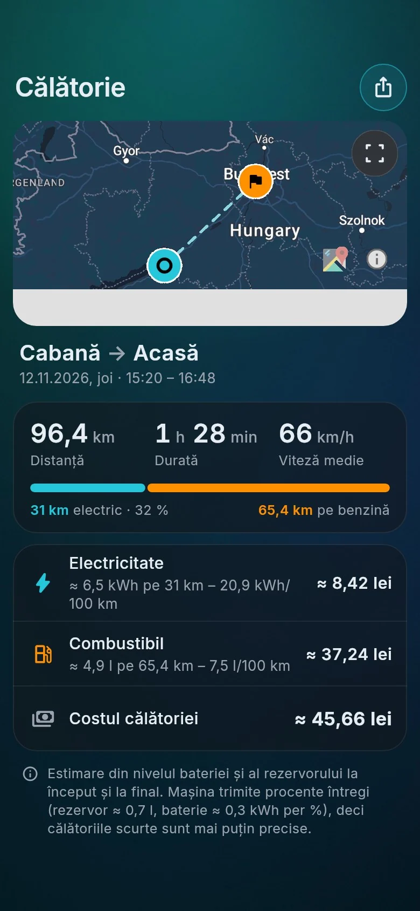
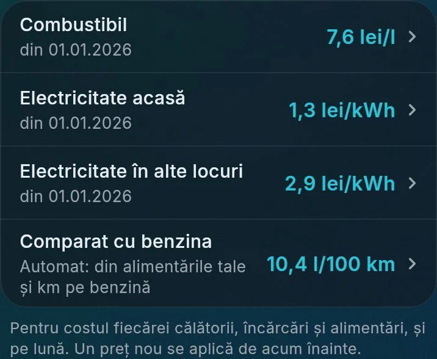
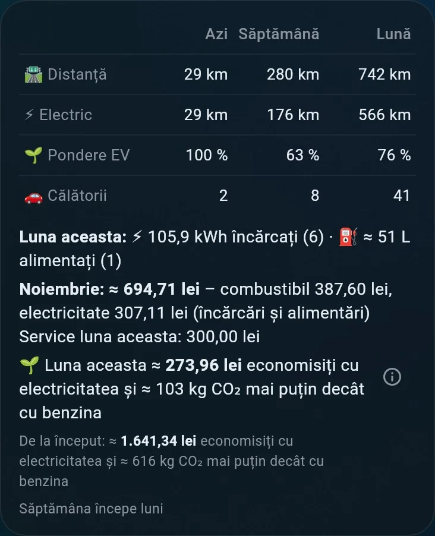
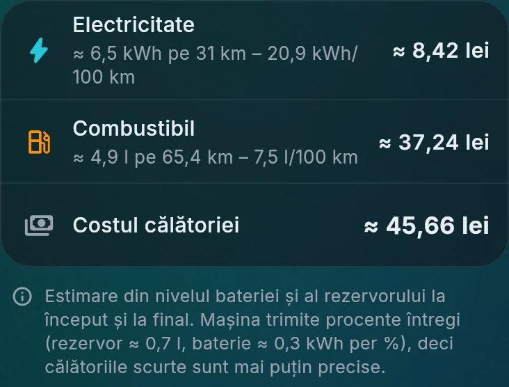

Costuri și consum
Cât te costă, de fapt, condusul?
Introduci o singură dată prețurile tale la combustibil și electricitate. Carmeo transformă fiecare călătorie, încărcare și alimentare în bani – și îți arată cât ai economisit mergând electric.


Prețurile tale, moneda ta.
Combustibil pe litru, electricitate acasă și electricitate în alte locuri – fiecare cu prețul său. Când un preț se schimbă, cel nou se aplică din acea zi.

Azi, săptămâna aceasta, luna aceasta.
Distanța, kilometrii electrici și ponderea electrică, una lângă alta – iar dedesubt costurile lunii pentru electricitate, combustibil și service. O perioadă proprie (de la – până la) și jurnalul lunar al călătoriilor în CSV / PDF – marcate de serviciu / personal, cu șoferul.
- Economisit cu electricitatea – cât ar fi costat pe benzină kilometrii parcurși electric.
- CO₂ evitat – o estimare, față de aceeași distanță parcursă pe benzină.


Cost pe călătorie și pe încărcare.
Fiecare călătorie arată energia și combustibilul consumate și cât au costat. Fiecare încărcare își arată prețul – estimat din tariful tău sau suma reală, dacă o introduci. Dacă setezi pierderile la încărcare ale mașinii, costul încărcărilor și al electricității din călătorii se calculează cu energia luată din rețea – sau cu kWh-ul măsurat de wallbox, dacă îl introduci pentru o încărcare. Litrii reali de pe pompă sau de pe bon – și alimentările adăugate manual – fac consumul și costul combustibilului mai exacte. De la plin la plin: consumul real de benzină între două alimentări. Costul călătoriei folosește prețul propriu al alimentării și prețul energiei din baterie – zero după o încărcare gratuită; până îți setezi prețurile, medii naționale (EU Weekly Oil Bulletin, Eurostat). Alimentări (de la 1.8.8, beta): kilometrajul la fiecare alimentare – completat automat, se poate corecta – și jurnalul de alimentări în CSV / PDF.
Încearc-o pe mașina ta.
Carmeo este gratuit. Intră în grupul de testare deschisă pe iPhone sau Android.